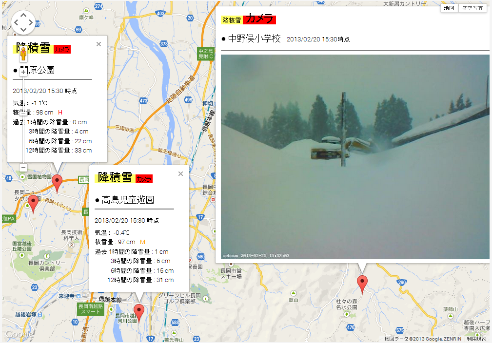

長岡市 降積雪センサーネットワーク実証実験
平成24年度 計測結果サンプル
＜平成24年度の実験は終了しました＞
主催：長岡技術科学大学・
情報ネットワーキング研究室
協力：長岡市、
(株)エヌ・シィ・ティ、
金井度量衡(株)、
(株)ネットワーク応用技術研究所
平成24年度新潟県IT&ITS推進協議会支援
協力事業の支援を受けて実施しました
※注意：本ページのデータは、平成24年度１～２月に行 った実験のもの(02/20時点)を再掲しています
現在の積雪状況とは無関係です
一日の閲覧数 :
○降雪量の右のアルファベットは降雪の度合を示している ※だいたいの目安です
[ L : 少ない ， M:ふつう ， H：多い ， X：計測不能 ]
※積雪面の凹凸や地面の傾きにより、積雪量は前後します

(C) 2013, Information Networking Labs. of Nagaoka University of Technology , All rights reserved.